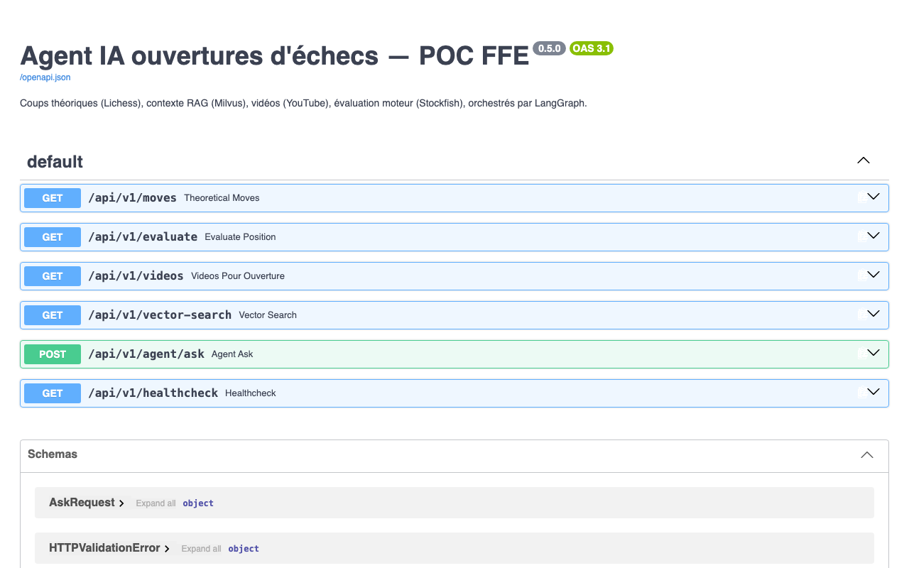

Interface Échiquéenne (Angular 17)

Échiquier interactif, flèches tactiques, statistiques Lichess et conseils sourcés.
API REST FastAPI (Swagger /docs)

Endpoints REST documentés sous OpenAPI 3.1 (/moves, /evaluate, /agent/ask).

Démonstration (~4 min)
Scénario filmé en conditions réelles : coups théoriques, RAG sourcé et déviation Stockfish.
Loom · Scan QR Code